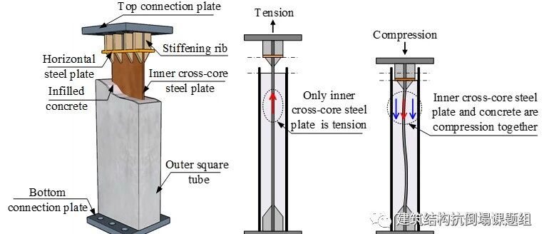

新论文：带可更换脚部件装配式RC剪力墙试验研究
以下文章来源于建筑结构抗倒塌课题组 ，作者程小卫等

建筑结构抗倒塌课题组，主要从事工程结构和材料在地震、冲击、火灾等灾害荷载下的抗倒塌和防护性能研究工作。

论文链接：
https://onlinelibrary.wiley.com/doi/10.1002/eqe.3957
DOI: 10.1002/eqe.3957
研究背景
钢筋混凝土（RC）剪力墙是高层建筑的主要抗侧力构件。基于延性设计考虑，剪力墙通常设计成弯曲受力模式，破坏时主要表现为：墙体脚部混凝土压碎，边缘纵筋压屈或拉断，破坏难以修复或修复时间较长，造成严重的经济损失。
装配式结构具有施工方便、施工周期短和节能环保等特点，符合国家推行的“可持续发展”和“双碳”理念，也满足“建筑工业化，住宅产业化”的新型建筑工业化的发展要求。相较于现浇RC墙，装配式RC墙的施工工艺在可更换性上具有独特的优势。为此，本文提出了一种带可更换脚部件的装配式RC剪力墙，通过试验研究了以下问题：（1）带可更换脚部件的装配式RC墙能否实现与现浇RC墙性能等同；（2）脚部件的承载力对装配式RC墙受力性能的影响；（3）更换脚部件后，损伤的墙体能否实现性能快速恢复。
试验设计
按照“强剪弱弯”原则设计了3片带可更换脚部件的装配式RC墙和1片现浇RC墙，编号为PCW1、PCW2、PCW3和RCW，墙体截面尺寸和配筋见图1和图2。3片装配式墙的非更换部分完全相同（且与现浇试件一致），但脚部件承载力不同，脚部件的构造和受力模式如图3所示。PCW1、PCW2和PCW3试件的脚部件抗拉承载力与RCW试件的边缘构件抗拉承载力之比nt分别为0.6、1.0和1.7。对比PCW1~PCW3试件可研究可更换脚部件强度的影响；对比PCW2和RCW试件可研究装配式RC墙能否实现与现浇RC墙性能等同。其他试件一次性加载至破坏，对于PCW1试件，首先加载至1%位移角，然后更换脚部件并且再次加载至试件破坏，研究装配式RC墙损伤后能否通过更换脚部件，实现性能快速恢复。


图1 现浇RC墙截面尺寸和配筋信息


图2 装配式RC墙截面尺寸和配筋信息

图3 可更换脚部件构造和受力模式
试验结果
（一）带可更换脚部件装配式RC墙破坏模式
图4对比了带不同强度脚部件装配式RC墙的破坏模式和滞回曲线。脚部件强度较小的PCW1和PCW2试件（nt ≤ 1.0），损伤主要集中在脚部件，表现为内嵌钢板受压屈曲和受拉断裂，脚部件的破坏过程如图5所示。而对于脚部件强度较大的PCW3试件（nt = 1.7），试件破坏前脚部件内嵌钢板并未出现屈曲和断裂，而是损伤延伸到非更换区域，如图4(c)。结果表明：为了实现带可更换脚部件装配式RC墙损伤集中到脚部可更换区域，脚部件的承载力不宜过大，建议与非更换区域边缘构件的抗拉承载力一致。
 |  |
|


图4 不同脚部件装配式RC墙破坏模式和滞回曲线

图5 脚部件内嵌钢板受压屈曲和受拉断裂过程
（二）带可更换脚部件装配式RC墙和现浇RC墙对比
图6对比了带可更换脚部件装配式RC墙与现浇RC墙的破坏模式和滞回曲线，可以看出：当可更换脚部件的抗拉承载力与现浇RC墙边缘构件抗拉承载力相等时，基本实现了装配式RC墙与现浇RC墙承载力、刚度和滞回特性等同，且由于装配式RC墙腹板与基础断开，墙体非更换区域的裂缝明显少于现浇RC墙。装配式PCW2试件的峰值承载力比现浇RCW试件高10%，但装配式墙体的变形能力小于现浇墙体。

| (a) 现浇RC墙 | (b) 装配式RC墙 | (c) 滞回曲线 |
（三）脚部件更换前/后装配式RC墙受力性能对比
图7对比了脚部件更换前/后装配式RC墙开裂模式和滞回曲线。可以看出：脚部件更换前（θ = 1.0%），墙体未开裂；更换之后，直至加载结束，墙体非更换区域产生了几条细裂缝。更换脚部件削弱了装配式RC墙在0.25%位移角之前的承载力和刚度。当位移角大于0.5%时，更换脚部件对装配式RC墙的承载力、刚度和滞回特性影响很小,如图8所示。结果表明：本文提出的带可更换脚部件的装配式RC墙，能够实现更换脚部件后，墙体的受力性能快速恢复。

| (a) 更换前，1.0%位移角 | (b) 更换后，最终破坏 | (c) 滞回曲线 |
图7 脚部件更换前/后装配式RC墙受力性能

| (a) θ = 0.25% | (b) θ = 0.5% | (c) θ = 0.75% | (d) θ = 1.0% |
抗弯承载力计算
（一）平截面假定校核
图9和10为墙底截面竖向位移和中性轴沿截面高度的分布。可以看出：在弹塑性位移角限值1.0%时，装配式RC墙底截面竖向位移沿截面高度基本成线性分布，满足平截面假定，且受压区主要集中在可更换脚部件区域。

| 图9 墙底截面竖向位移 | 图10 中性轴位置 |
（二）抗弯承载力计算
采用截面分析软件XTRACT计算了4片墙体的抗弯承载力，如图11和表1。可以看出：XTRACT较好地预测了墙体的屈服强度。然而，对于脚部件强度较大的PCW3试件，峰值强度的计算值大于试验值，主要原因是该试件墙体损伤从墙底转移到墙上部非更换区域，未完全发挥底截面抗弯承载能力。

| (a) RCW | (b) PCW1, PCW2 and PCW3 |
表1 试验与计算抗弯承载力对比

结论和展望
（1）提出了一种带可更换脚部件的装配式RC墙，基本可以实现损伤集中在可更换区域，且承载力、刚度和滞回特性与现浇RC墙相同，损伤的墙体可以通过更换脚部件实现抗震性能快速恢复。
（2）侧向变形时，带可更换脚部件的装配式RC墙底截面竖向位移基本成线性分布，可基于平截面假定计算其屈服和峰值承载力。
（3）本研究仅在墙体层面开展了研究，未来还需解决此类墙体用于整体结构时的系列问题，如墙-墙连接、墙-板连接，整体结构发生不可恢复变形时如何更换脚部件等。
END
程小卫
往期回顾
---End---
建筑结构的生成式智能设计：
AIstructure-Copilot：嵌入CAD平台的结构智能设计助手

相关研究
学术报告视频
专著
人工智能与机器学习
---结构智能设计
---其他土木工程领域人工智能研究
城市灾害模拟与韧性城市
高性能结构与防倒塌
新论文：抗震&防连续倒塌：一种新型构造措施
长按识别二维码，关注我们的科研动态